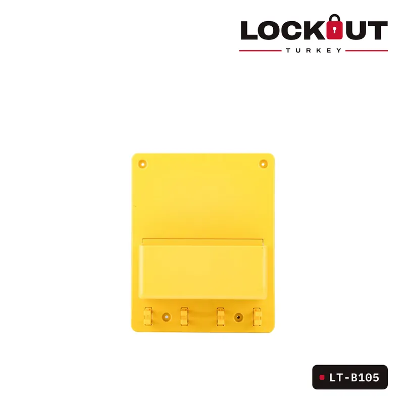
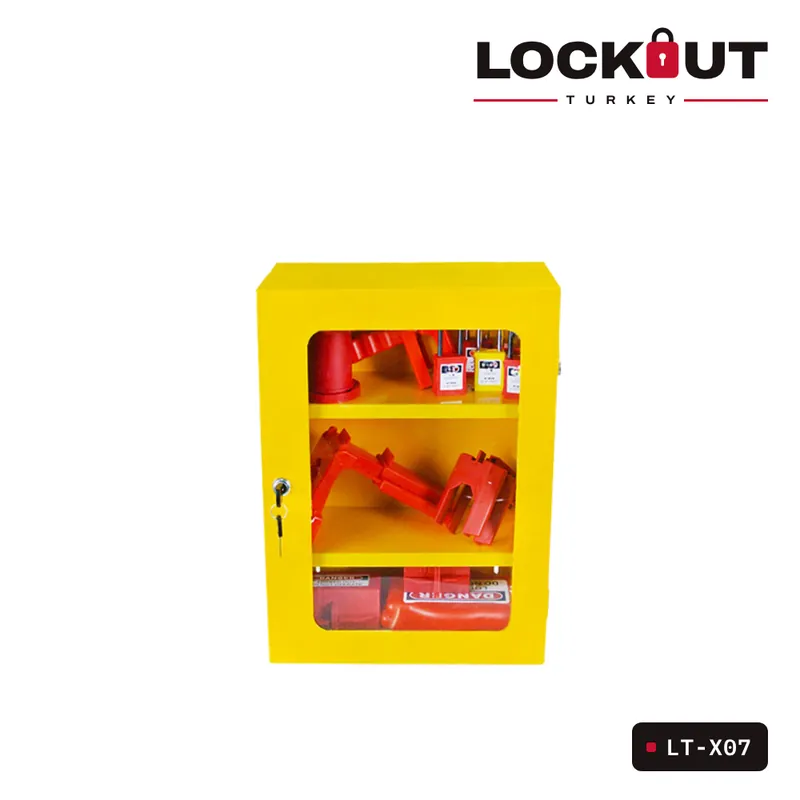
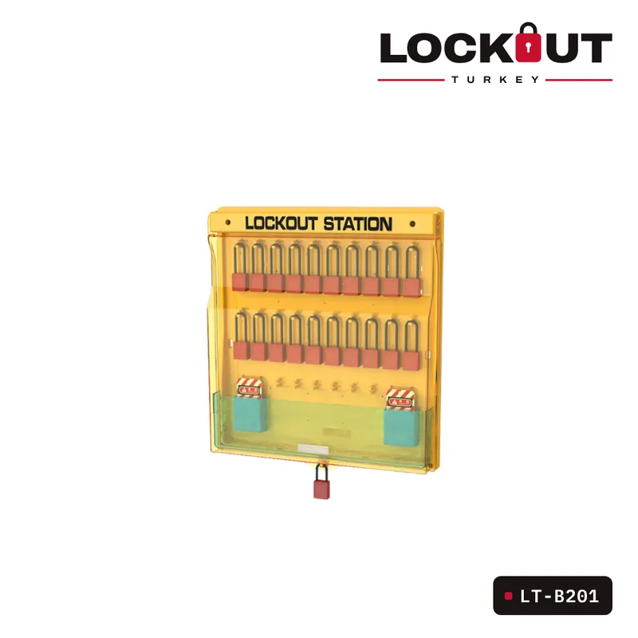
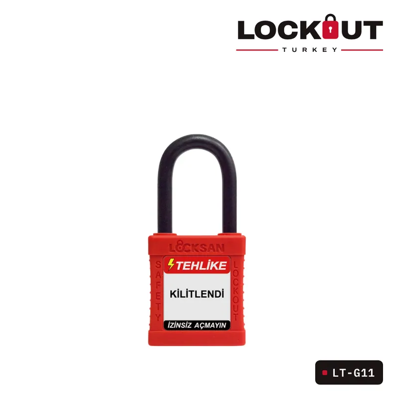
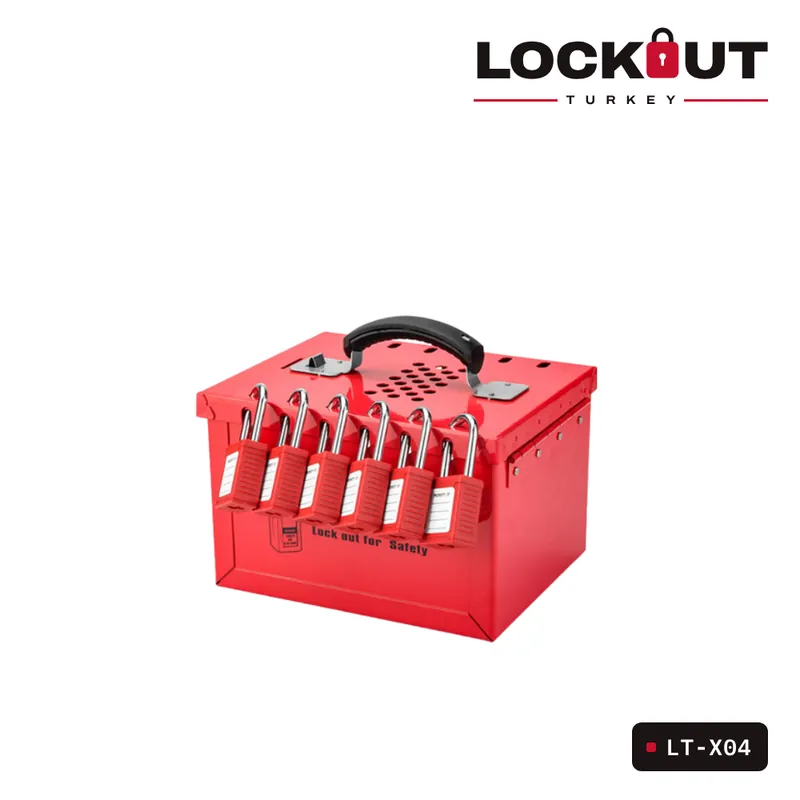

LOTO istasyonu nereye kurulur, içinde neler olmalı?
Kilitleme ekipmanı kullanılacağı yere yakın, düzenli ve eksiksiz durmalı. İstasyonun yeri ve içeriği için pratik öneriler.
Kilitleme ekipmanı bir dolabın dibinde ya da depoda duruyorsa bakım sırasında aranır, eksik kalır ya da hiç kullanılmaz. LOTO istasyonu ekipmanın sahadaki sabit yeridir; eksik bir parça bir bakışta fark edilir.
Nereye kurulmalı?
- Bakımı yapılan makineye ya da elektrik odasına yakın, kolay ulaşılan bir duvara
- Görünür ve iyi aydınlatılmış bir noktaya
- Toz, nem ve kimyasala maruz kalan alanlarda kapaklı modeller tercih edilerek (LT-B101 Duvara Monte Edilebilen Kapaklı Loto İstasyonu)
İçinde neler olmalı?
- Bölgede çalışan kişi sayısı kadar kişisel emniyet asma kilidi
- Kişisel kilitleme etiketleri ve yazmak için kalem
- Çoklandırıcılar
- Bölgedeki enerji noktalarına uygun şalter, vana ve fiş kilitleri
Hangi model?
Küçük alanlar ve tek ekip için kapaksız mini istasyonlar (LT-B105 Kapaksız Mini Loto İstasyonu), çok sayıda kilidin tek yerde durması gereken yerlerde metal dolaplar (LT-X07 Duvara Asılabilir Metal Loto Dolabı) ya da kombinasyon istasyonları (LT-B201 Kombinasyon Gelişmiş Büyük Loto İstasyonu) uygundur. İstasyonlar boş ya da ekipmanla dolu olarak tedarik edilebilir.
İstasyonun içeriğini bölgenizdeki enerji noktalarına göre birlikte belirleyebiliriz.
Doğru ürünü birlikte seçelimKilitleyeceğiniz noktanın fotoğrafını gönderin, uygun ekipmanı bildirelim.
WhatsApp’tan yazın
Yazıda geçen ürünler
İlgili ürünler



Blog
Tüm yazılarDiğer yazılar

Emniyet asma kilidi nasıl seçilir? Çene malzemesi, boy ve anahtar sistemi
Çelik mi plastik çene mi, 38 mm mi 76 mm mi, farklı anahtar mı master anahtar mı? Kişisel LOTO kilidini seçerken bakılacak dört nokta.
Devamını oku →Minyatür devre kesici kilitleri: POS, PIS, POW ve TBLO farkı
Sigortalar için kilit seçerken karşılaşılan POS, PIS, POW ve TBLO kısaltmaları ne anlama geliyor, hangi sigortaya hangisi uyar?
Devamını oku →
Grup kilitleme nasıl yapılır? Grup kilit kutusuyla adım adım
Çok kişinin çok noktada çalıştığı bakımlarda her çalışanın her noktaya kilit takması pratik değildir. Grup kilit kutusu bu işi nasıl kolaylaştırır?
Devamını oku →